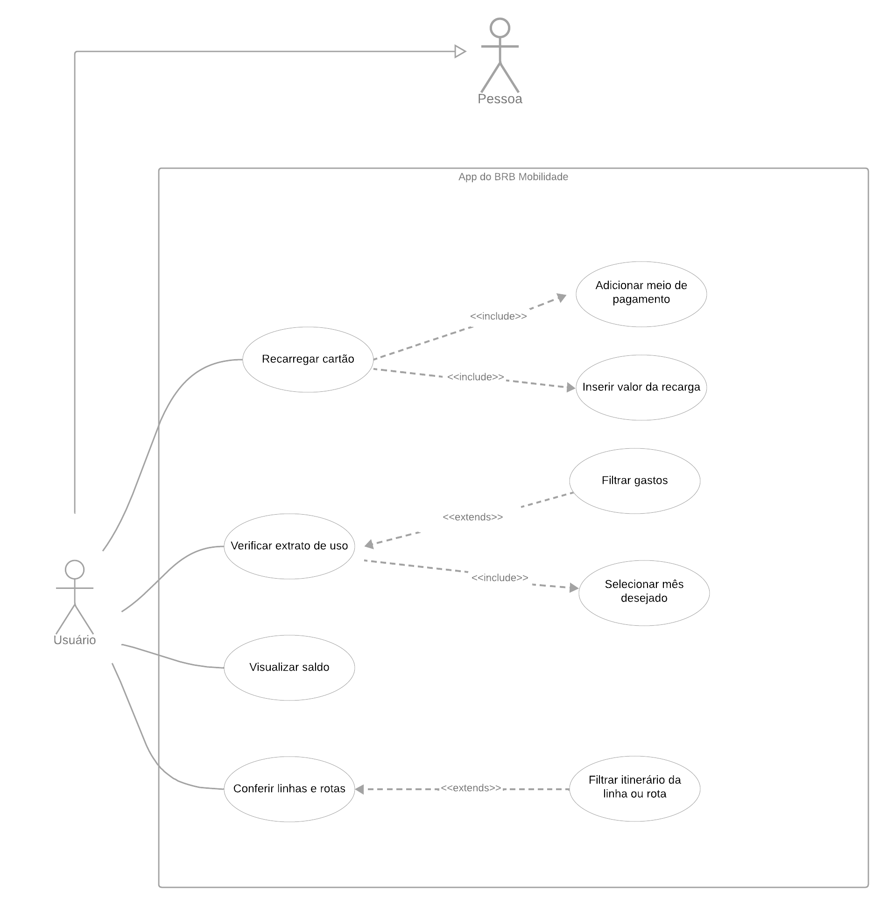

Casos de uso
Introdução
Um caso de uso é uma representação visual e textual de um conjunto de interações entre um sistema e seus atores (usuários externos) para atingir um objetivo específico. Casos de uso são uma técnica amplamente utilizada na engenharia de requisitos de software para documentar e compreender os requisitos funcionais de um sistema de software.
Metodologia
Um diagrama de caso de uso é uma representação visual de casos de uso, atores e suas interações em um sistema de software. Esses diagramas são uma parte importante da modelagem de requisitos no processo de desenvolvimento de software e ajudam a representar de forma clara como os atores (usuários ou sistemas externos) interagem com o sistema para realizar tarefas específicas. Os diagramas de caso de uso são uma parte fundamental da UML (Unified Modeling Language), uma linguagem de modelagem amplamente utilizada na engenharia de software.
| Nome | Função | Elemento |
|---|---|---|
| Ator | O ator é representado por um ícone, geralmente um stick figure, e representa uma entidade externa ao sistema que interage com ele. | |
| Caso de Uso | Os casos de uso são representados por elipses e descrevem as diferentes funcionalidades ou ações que o sistema pode realizar em resposta a interações com os atores. Cada caso de uso tem um nome que descreve a ação que representa. | |
| Sistema | Os sistemas são representados por retângulos. Eles contêm os casos de uso relacionados | |
| Relações | As relações são represetadas por linhas de associação (setas) que conectam atores aos casos de uso ou relações entre casos de uso. |
Tabela 1: Elementos do diagrama de casos de uso (Fonte: BRAGA, Caio)
É importante ressaltar que no contexto de diagramas de caso de uso, "extends" e "include" são tipos de relações que descrevem como os casos de uso interagem entre si em um sistema de software. Ambas as relações têm finalidades diferentes e são usadas para modelar diferentes tipos de comportamento no sistema.
- Relação de "Include" (Inclusão): A relação de "include" é usada para indicar que um caso de uso inclui outro caso de uso como parte de sua funcionalidade. Isso significa que o caso de uso base (o que inclui) sempre executa o caso de uso incluído como parte de sua própria execução. O caso de uso incluído é executado de forma transparente ao usuário do caso de uso base. A relação "include" é geralmente representada por uma seta tracejada, com um rótulo que indica "include". É usada para dividir a funcionalidade em partes menores e mais gerenciáveis que podem ser reutilizadas em vários contextos.
Exemplo de "include": Considere um caso de uso principal "Realizar Pagamento". Esse caso de uso pode incluir o caso de uso "Selecionar Método de Pagamento", que é uma parte essencial da ação de realizar um pagamento.
- Relação de "Extend" (Extensão): A relação de "extend" é usada para representar comportamentos opcionais e condicionais em um caso de uso, que podem ser estendidos além do fluxo básico. Isso significa que o caso de uso estendido é opcional e só ocorre sob certas condições específicas. A relação "extend" é geralmente representada por uma seta tracejada, com um rótulo que indica "extend". Ela permite modelar cenários alternativos sem poluir o fluxo básico de um caso de uso.
Exemplo de "extend": Em um caso de uso "Reservar Quarto de Hotel", pode haver uma extensão para lidar com "Atualização de Reserva", que só ocorre se o cliente desejar modificar a reserva após a confirmação.
Diagrama de Casos de Uso
A figura 1 demonstra o diagrama de casos de uso.

Figura 1: Casos de uso do app BRB Mobilidade (Fonte: BRAGA, Caio)
Casos de Uso & Especificação
UC -> Caso de Uso
Modelo de tabela de Caso de Uso:
| UC0X | Titulo do UC |
|---|---|
| Autores | Autores do UC |
| Descrição | Descrição do UC |
| Atores | Atores do UC |
| Pré Condições | Pré Condições do UC |
| Fluxo Principal | Fluxo Principal do UC em topicos |
| Fluxo Alternativo | Fluxo Altenativo do UC em topicos |
| Fluxo de Exceção | Fluxo de exceção do UC em topicos |
| Pós Condições | Pos condições do UC |
| Rastreabilidade | Rastreabilidade do UC |
Tabela 2: Modelo de tabela de Caso de Uso (Fonte: BASILIO, Guilherme)
Explicação dos elementos:
- Atores: Representa os atores, podendo ser pessoas, instituições ou até sistemas do site ou app, que interagem com o caso de uso diretamente
- Pré Condições: Indica as condições para que pelo menos um dos fluxos seja atendido completamente
- Fluxo Principal: Representa o fluxo que ocorrerá com mais frequência quando o usuário utilizar tal recurso representado no caso de uso
- Fluxo Alternativo: Representa o fluxo mais relevante que ocorrerá com menos frequencia que o fluxo principal
- Fluxo de Exceção: Representa a exceção do recurso representado no caso de uso, normalmente sendo a recusação da funcionalidade ou saída da mesma
- Pós Condições: Indica as condições que obrigatoriamente ocorrerão após a realização de cada fluxo
- Rastreabilidade: Indica a rastreabilidade utilizada pra criação do caso de uso
UC01 - Fazer Login
A especificação de cada caso de uso pode ser observado a seguir na Figura 1.
Tabela 1 – UC01
| UC01 | Fazer Login |
|---|---|
| Autor | Guilherme Basilio |
| Descrição | Fazer Login no BRBMobilidade |
| Atores | > Usuário > BRBMobilidade |
| Pré Condições | > Estar deslogado |
| Fluxo Principal | > Usuário acessa o BRBMobilidade > Usuário clica no botão "Autenticação Interna" > Usuário digita seu CPF > Usuário digita sua senha > Usuário ficará logado até sair |
| Fluxo Alternativo | > Usuário acessa o BRBMobilidade > Usuário seleciona qual tipo de cartão possui > Usuário clica no botão "Login" > Usuário ficará logado até sair |
| Fluxo de Exceção | Fluxo de Exceção 1 - CPF inválido > Aplicativo avisa que não foi possível realizar o login Fluxo de Exceção 2 - Esquecer a Senha > Usuário clica em "Esqueceu a Senha?" Usuário recebe um e-mail para recuperar |
| Pós Condições | Usuário fica logado e pode realizar todas as ações |
| Rastreabilidade | RF10, IS11 |
Tabela 3: Fazer login (Fonte: BASILIO, Guilherme)
UC02 - Realizar recarga
| UC02 | Realizar recarga |
|---|---|
| Autor | Guilherme Basilio |
| Descrição | Adicionar crédito ao cartão BRB Mobilidade |
| Atores | > Usuário > BRB Mobilidade |
| Pré Condições | > Ter um cartão cadastrado |
| Fluxo Principal | > Usuário acessa o BRB Mobilidade > Usuário clica no botão "Realizar recarga" > Usuário selecionar o método de pagamento > Usuário digita quanto quer recarregar > Usuário recarrega o cartão |
| Fluxo Alternativo | > Não possui fluxo alternativo |
| Fluxo de Exceção | Fluxo de Exceção 1 - Você ainda não tem cartões vinculados > Aplicativo avisa que o usuário não tem cartões vinculados |
| Pós Condições | Usuário volta para a tela de inicio |
| Rastreabilidade | OBS03, IS03, IS08 |
Tabela 4: Realizar recarga (Fonte: BASILIO, Guilherme)
UC03 - Visualizar linhas e horários
| UC03 | Visualizar linhas e horários |
|---|---|
| Autor | Guilherme Basilio |
| Descrição | Visualizar linhas e horários de ônibus |
| Atores | > Usuário > BRB Mobilidade |
| Pré Condições | > Estar logado |
| Fluxo Principal | > Usuário acessa o BRB Mobilidade > Usuário clica no botão "Linhas e horários" > Usuário digita a linha ou o destino > Usuário visualiza as linhas e horários |
| Fluxo Alternativo | > Não possui fluxo alternativo |
| Fluxo de Exceção | --- |
| Pós Condições | Usuário irá ver o itinerário do ônibus desejado |
| Rastreabilidade | IS02, IS05, OBS02, OBS04 |
Tabela 5: Visualizar linhas e horários (Fonte: BASILIO, Guilherme)
UC04 - Acompanhar cadastro/cartão
| UC04 | Acompanhar cadastro de cartão específico |
|---|---|
| Autor | Gabriel Barbosa |
| Descrição | Acompanhar cadastro de um cartão específico |
| Atores | > Usuário > BRB Mobilidade |
| Pré Condições | > Ter feito o login no sitema Ter cadastro em cartão específico |
| Fluxo Principal | > Usuário acessa o BRB Mobilidade > Usuário clica no botão "Estudantil" (Um dos cartões específicos) Faz login com o CPF Acessa a página de acompanhamento de cadastro |
| Fluxo Alternativo | > Não possui fluxo alternativo |
| Fluxo de Exceção | Fluxo de Exceção 1 - Você não possui cartão cadastrado > Usuário acessa o BRB Mobilidade > Usuário clica no botão "Estudantil" (Um dos cartões específicos) Não possui cadastro |
| Pós Condições | Usuário verá a o menu de opções que se pode fazer com o cartão específico |
| Rastreabilidade | IS10, OBS05, OBS08, OBS09 |
Tabela 6: Acompanhar cadastro/cartão (Fonte: BARBOSA, Gabriel)
UC05 - Vizualizar extrato de uso
| UC02 | Informações |
|---|---|
| Descrição | O usuário é capaz de checar o extrato de uso de determinado mês. |
| Ator | Usuário |
| Pré-condições | Acesso à internet, acesso ao app |
| Ação | O usuário acessa o seu extrato de uso |
| Fluxo principal | > O usuário acessa o aplicativo > O usuário realiza o login > O usuário acessa a seção "Extrato de uso" > O usuário seleciona o mês desejado > O usuário visualiza o extrato do mês selecionado |
| Fluxo alternativo | > O usuário acessa o aplicativo > O usuário realiza o login > O usuário acessa a seção "Menu" > O usuário acessa a seção "Extrato de uso" > O usuário seleciona o mês desejado > O usuário visualiza o extrato do mês selecionado |
| Fluxo de exceção | > O usuário acessa o aplicativo > O usuário realiza o login > O usuário acessa a seção "Menu" > O usuário acessa a seção "Extrato de uso" > O usuário seleciona o mês desejado > O usuário seleciona um mês onde o cartão não foi utilizado > O usuário verifica a resposta do aplicativo de que naquele mês não houve gastos |
| Pós-condições | O usuário agora está com as notificações ligadas e será notificado sobre novos eventos |
| Data de Criação | 25/10/2023 |
| Rastreabilidade | IS01, OBS01 |
Tabela 7: Visualizar extrato de uso (Fonte: BRAGA, Caio)
Validação com o cliente
O grupo realizou uma reunião de validação com o nosso cliente, que foi gravada e está disponível para acesso aqui.
Durante a reunião foi apresentado ao nosso cliente o nosso artefato de Casos de Uso da aplicação, repassando cada tópico elaborado na documentação. Ao longo da videochamada foi abordado com o cliente se ele já conhecia os casos de uso oferecidos pelo aplicativo do BRB Mobilidade que estavam presentes no nosso diagrama, se o diagrama realmente reflete o uso real que ele teve com o sistema.
Bibliografia
[1] BARBOSA, S. D. J.; SILVA, B. S. Interação Humano-Computador. Rio de Janeiro: Elsevier, 2011.
[2] SERRANO, Maurício; SERRANO, Milene; Requisitos - Aula 11;
[3] UML Use Case Diagrams. UML Diagrams. Disponível em: https://www.uml-diagrams.org/use-case-diagrams.html. Acesso em: 24/10/2023.
[4] Diagramas de Caso de Uso. Disponível em: https://www.lucidchart.com/pages/pt/diagrama-de-caso-de-uso-uml. Acesso em: 25/10/2023
[5] Lucidchart. Diagrama de Caso de Uso UML. Disponível em: <https://www.lucidchart.com/pages/pt/diagrama-de-caso-de-uso-uml>. Acesso em: 14 maio 2023.
[6] FERNANDO, Sidney. Caso de Uso. Repositório da disciplina de Requisitos de Software da Universidade de Brasília, 2023. Disponível em: https://requisitos-de-software.github.io/2023.1-BilheteriaDigital/modelagem/useCase/. Acesso em: 25 out. 2023.
Histórico de Versões
| Versão | Descrição | Autor | Data | Revisor | Data de revisão |
|---|---|---|---|---|---|
| 1.0 | Criação do documento de Casos de uso | Guilherme Basilio | 24/10/2023 | Joel Soares | 25/10/2023 |
| 1.1 | Adição da metodologia e Modelo de tabela | Guilherme Basilio | 24/10/2023 | Joel Soares | 25/10/2023 |
| 1.2 | Atualização metodologia e casos de uso | Gabriel Barbosa | 24/10/2023 | Joel Soares | 25/10/2023 |
| 1.3 | Adição de diagrama e correções pontuais | Caio Braga | 24/10/2023 | Joel Soares | 25/10/2023 |